Platonic Solids - Why Five?

 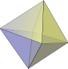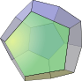 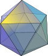
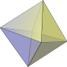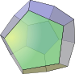 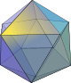
A Platonic Solid is a 3D shape where:
- each face is the same regular polygon
- the same number of polygons meet at each vertex (corner)
There are only five of them ... why?
Simplest Reason: Angles at a Vertex
The simplest reason there are only 5 Platonic Solids is this:
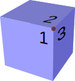
At each vertex at least 3 faces meet (maybe more).
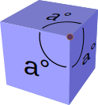
When we add up the internal angles that meet at a vertex,
it must be less than 360 degrees.
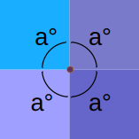
Because at 360° the shape flattens out!
And, since a Platonic Solid's faces are all identical regular polygons, we get:
 |
A regular triangle has internal angles of 60°, so we can have:
|
 |
A square has internal angles of 90°, so there is only:
|
 |
A regular pentagon has internal angles of 108°, so there is only:
|
 |
A regular hexagon has internal angles of 120°, but 3×120°=360° which won't work because at 360° the shape flattens out. So a regular pentagon is as far as we can go. |
And this is the result:
| At each vertex: | Angles at Vertex (Less than 360°) |
Solid | |
|---|---|---|---|
| 3 triangles meet | 180° | tetrahedron | |
| 4 triangles meet | 240° | octahedron | |
| 5 triangles meet | 300° | icosahedron | |
| 3 squares meet | 270° | cube | |
| 3 pentagons meet | 324° | dodecahedron |
Anything else has 360° or more at a vertex, which is impossible. Example: 4 regular pentagons (4×108° = 432°) won't work. And 3 regular hexagons (3×120° = 360°) won't work either.
And that is the simplest reason.
Another Reason (using Topology)
Just for fun, let us look at another (slightly more complicated) reason.
In a nutshell: it is impossible to have more than 5 platonic solids, because any other possibility violates simple rules about the number of edges, corners and faces we can have together.
It begins with Euler's Formula ...
Euler's Formula
Do you know about Euler's Formula?
It says: for any convex polyhedron (which includes the Platonic Solids) the Number of Faces plus the Number of Vertices (corner points) minus the Number of Edges always equals 2
 It is written: F + V − E = 2
It is written: F + V − E = 2
Try it on the cube:
A cube has 6 Faces, 8 Vertices, and 12 Edges,
so:
6 + 8 − 12 = 2
|
To see why this works, imagine taking the cube and adding an edge 7 + 8 − 13 = 2 |
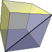 |
|
Likewise when we include another vertex 6 + 9 − 13 = 2. |
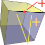 |
| "No matter what we do, we always end up with 2" (But only for this type of Polyhedron ... read on!) |
Faces Meet
Next, think about a typical platonic solid. What kind of faces does it have, and how many meet at a corner (vertex)?
| The faces can be triangles (3 sides), squares (4 sides), etc. | |
| Let us call this "s", the number of sides each face has. | |
| Also, at each corner, how many faces meet? For a cube 3 faces meet at each corner. For an octahedron 4 faces meet at each corner. | |
| Let us call this "m" (how many faces meet at a corner). | |
(Those two are actually enough to show what type of solid it is)
Exploding Solids!
Now, imagine we pull a solid apart, cutting each face free.
We get all these little flat shapes. And there are twice as many edges (because we cut along each edge).
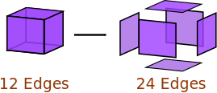
Example: the cut-up-cube is now six little squares.
And each square has 4 edges, making a total of 24 edges (versus 12 edges when joined up to make a cube).
So, how many edges? Twice as many as the original number of edges "E", or simply 2E
But this is also the same as counting all the edges of the little shapes. There are s (number of sides per face) times F (number of faces).
 This can be written as sF = 2E
This can be written as sF = 2E
|
Likewise, when we cut it up, what was one corner will now be several corners. In the case of a cube there are three times as many corners. |
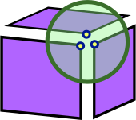 |
- The new number of corners is: how many faces that meet at a corner (m) times how many vertices of the original solid (V), which is mV
- The new number of edges is: twice as many as the original solid, which is 2E
 This can be written as mV = 2E
This can be written as mV = 2E
Bring Equations Together
That is all the equations we need, let us use them together:
sF = 2E, so F = 2E/s
mV = 2E, so V = 2E/m
Now let us put those into "F+V−E=2":
F + V − E = 2
2E/s + 2E/m − E = 2
Next, some rearranging ... divide the lot by "2E":
1/s + 1/m − 1/2 = 1/E
Now, "E", the number of edges, cannot be less than zero, so "1/E" cannot be less than 0:
1/s + 1/m − 1/2 > 0
Or, more simply:
1/s + 1/m > 1/2
So, all we have to do now is try different values of:
- "s" (number of sides each face has, cannot be less than 3), and
- "m" (number of faces that meet at a corner, cannot be less than 3),
and we are done!
The Possibilities!
The possible answers are:
| s | m | 1/s+1/m | > 0.5 ? |
|---|---|---|---|
| 3 | 3 | 0.666... | |
| 3 | 4 | 0.583... | |
| 4 | 3 | 0.583... | |
| 4 | 4 | 0.5 | |
| 5 | 3 | 0.533... | |
| 3 | 5 | 0.533... | |
| 5 | 4 | 0.45 | |
| 4 | 5 | 0.45 | |
| 5 | 5 | 0.4 | |
| etc... | ... | ... |
Example: s=5, m=5
1/s + 1/m − 1/2 = 1/E becomes
which makes E (number of edges) = −10, And we can't have a negative number of edges!
Real?
And the last step is to see if those solids are real:
| s | m | what it means | solid | |
|---|---|---|---|---|
| 3 | 3 | triangles meeting 3-at-a-corner | tetrahedron | |
| 3 | 4 | triangles meeting 4-at-a-corner | octahedron | |
| 4 | 3 | squares meeting 3-at-a-corner | cube | |
| 5 | 3 | pentagons meeting 3-at-a-corner | dodecahedron | |
| 3 | 5 | triangles meeting 5-at-a-corner | icosahedron |
So, only 5, and they all exist.
Job Done.
Schläfli !
And just to keep you well educated ... the "s" and "m" values put together inside curly braces {} make what is called the "Schläfli symbol" for polyhedra:
Examples:
- The Octahedron's Schläfli symbol is {3,4},
- and the Icosahedron's is {3,5},
can you work out the rest?